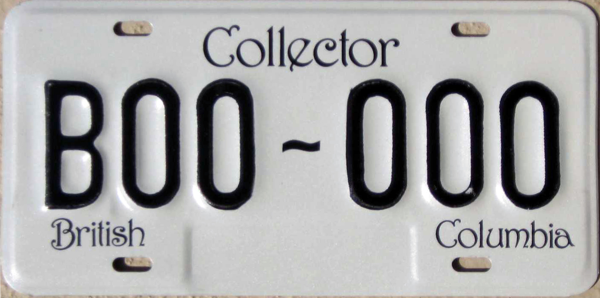
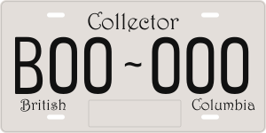
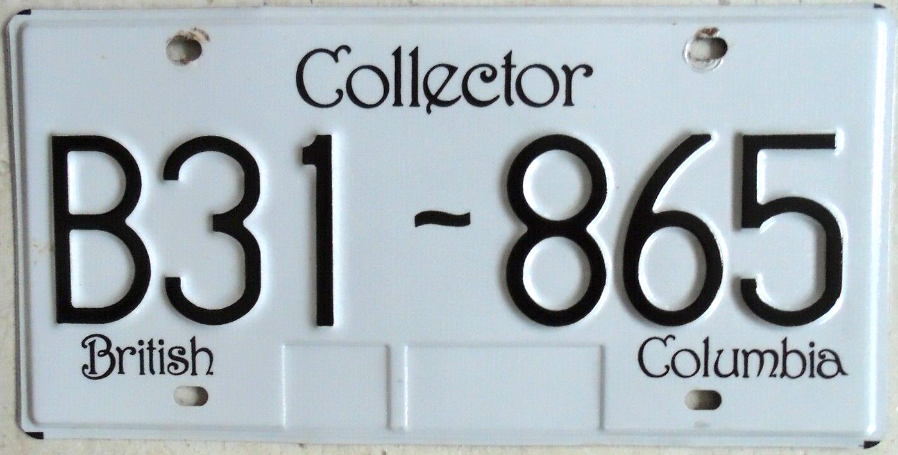
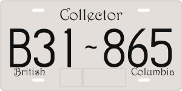
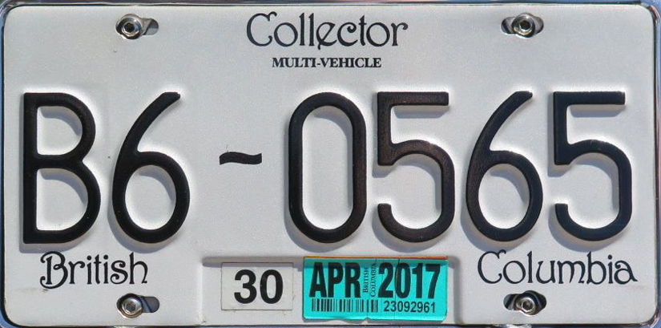
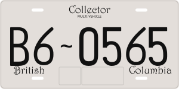
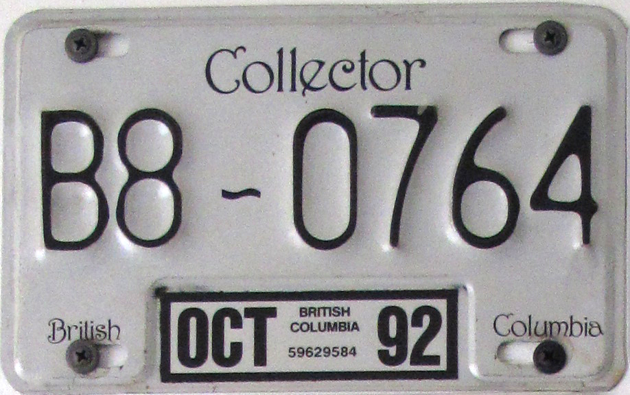
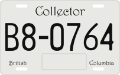
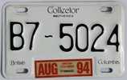
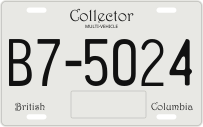

“Collector,” “British,” and “Columbia” now use outlined Harrington Regular from the supplied HARNGTON.TTF, Font Bureau version 1.10. The normal upright glyphs retain their native advances, side bearings and proportions under one scale per line. No Harrington installation is required to view or export the plate.
The supplied Plain version was compared too; Regular has the closer light stroke and curled C, looping B and diagonal e. The precise historical production version remains unconfirmed. The small MULTI-VEHICLE subtitle uses a separate plain sans substitute.
Collector and corresponding passenger presets share the Astrographic Classic or Waldale alphabet. The die choice remains distinct from the decorative wording. Full-size plates use the filled wave with square ends; motorcycle plates retain the ordinary dash.
Open the two-well Collector plate · BCpl8s source article
Overlays use approximate full-photograph framing. Wear, embossing, perspective and camera distortion remain visible. They expose remaining contour and spacing differences rather than certifying exact tooling. B00~000 is the original Astrographic sample; it is not a later two-well Waldale specimen.
Astrographic Classic. Open editable plate · Full reference photograph


Waldale. Open editable plate · Full reference photograph


Waldale · photographed two-well version; Astrographic remains selectable for earlier manufacture. Open editable plate · Full reference photograph


Astrographic Classic. Open editable plate · Full reference photograph


Astrographic Classic. Open editable plate · Full reference photograph


.jpg){kind=link}
.jpg){kind=link}
.jpg){kind=link}
.jpg){kind=link}